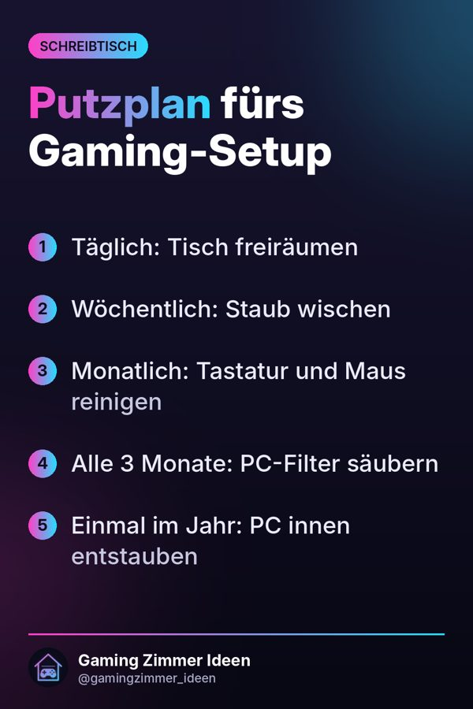

Ideen › Schreibtisch Organisation
Putzplan fürs Gaming-Setup: was du täglich, wöchentlich und monatlich machen solltest

Mit diesem Putzplan bleibt dein Gaming-Setup sauber: Täglich den Tisch freiräumen, wöchentlich Staub wischen, monatlich Tastatur und Maus reinigen, alle drei Monate die PC-Filter säubern und einmal im Jahr den PC innen entstauben.
Auf einen Blick
- Täglich: Tisch freiräumen
- Wöchentlich: Staub wischen
- Monatlich: Tastatur und Maus reinigen
- Alle 3 Monate: PC-Filter säubern
- Einmal im Jahr: PC innen entstauben
Tipp: Trag dir die Termine für Filter und PC-Reinigung in den Handy-Kalender ein, dann vergisst du sie nicht.